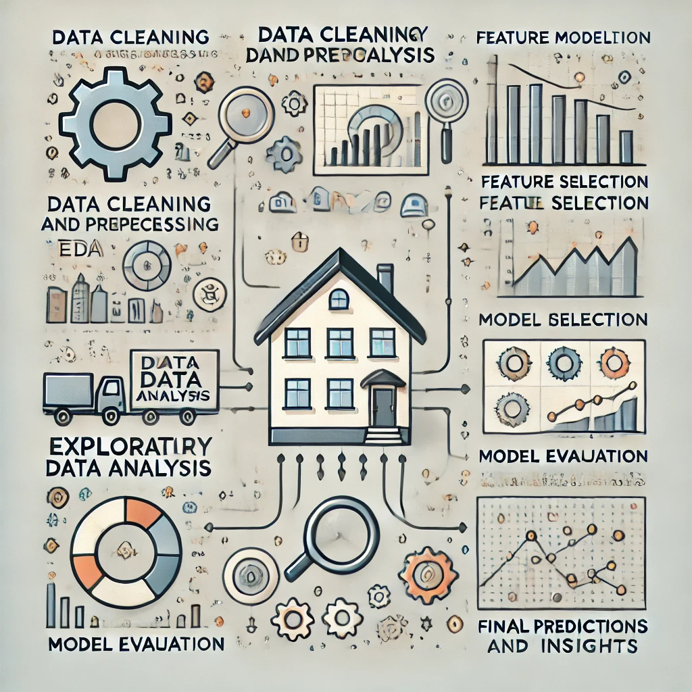
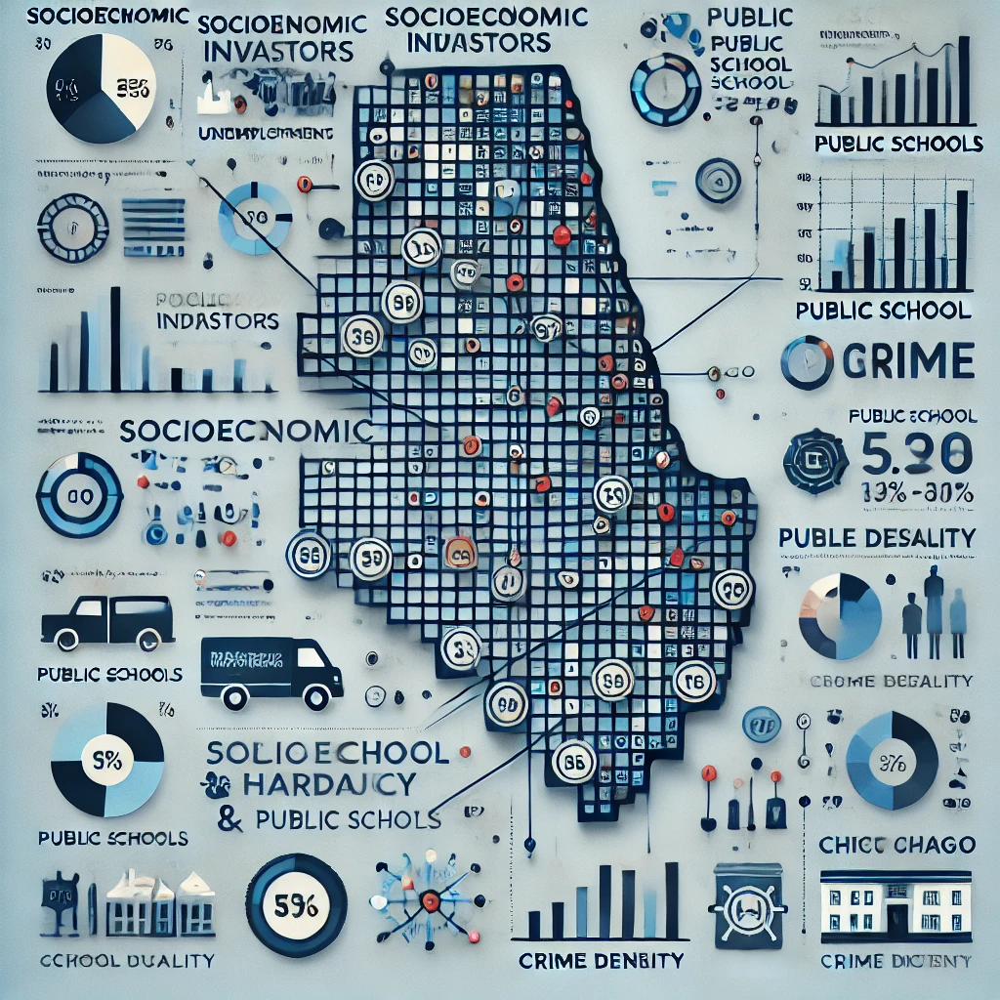
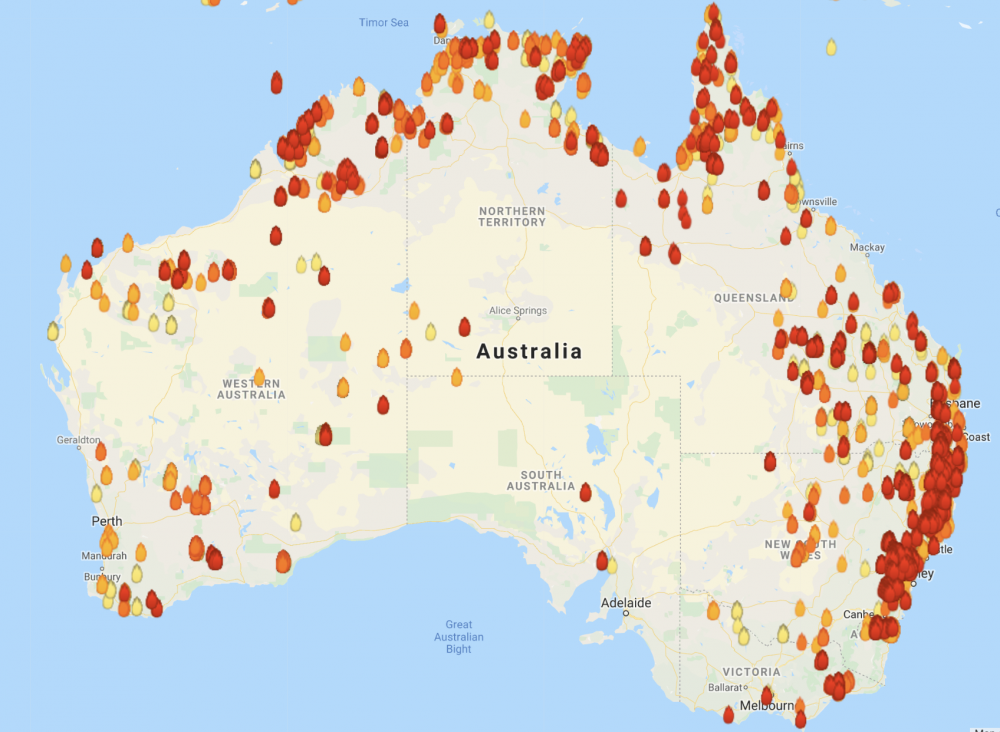
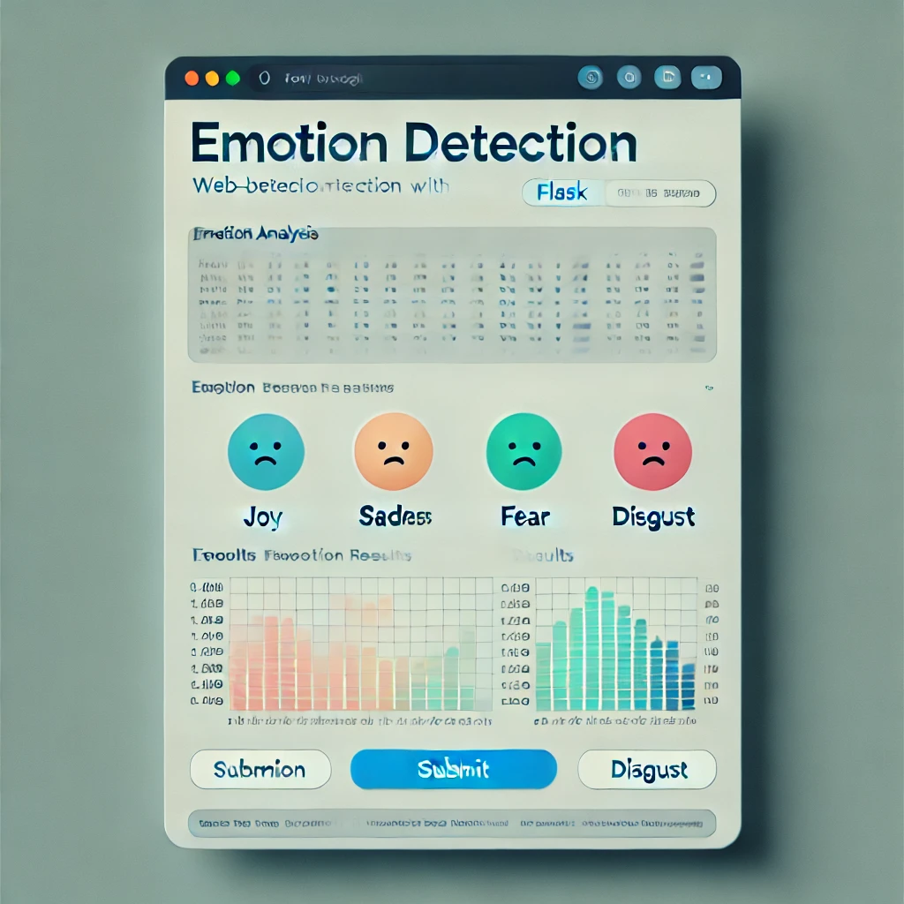
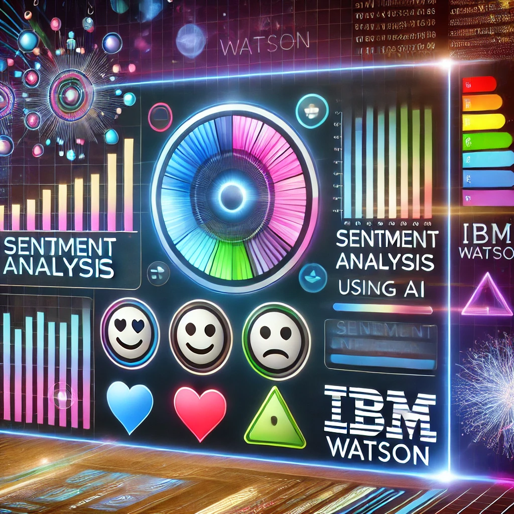
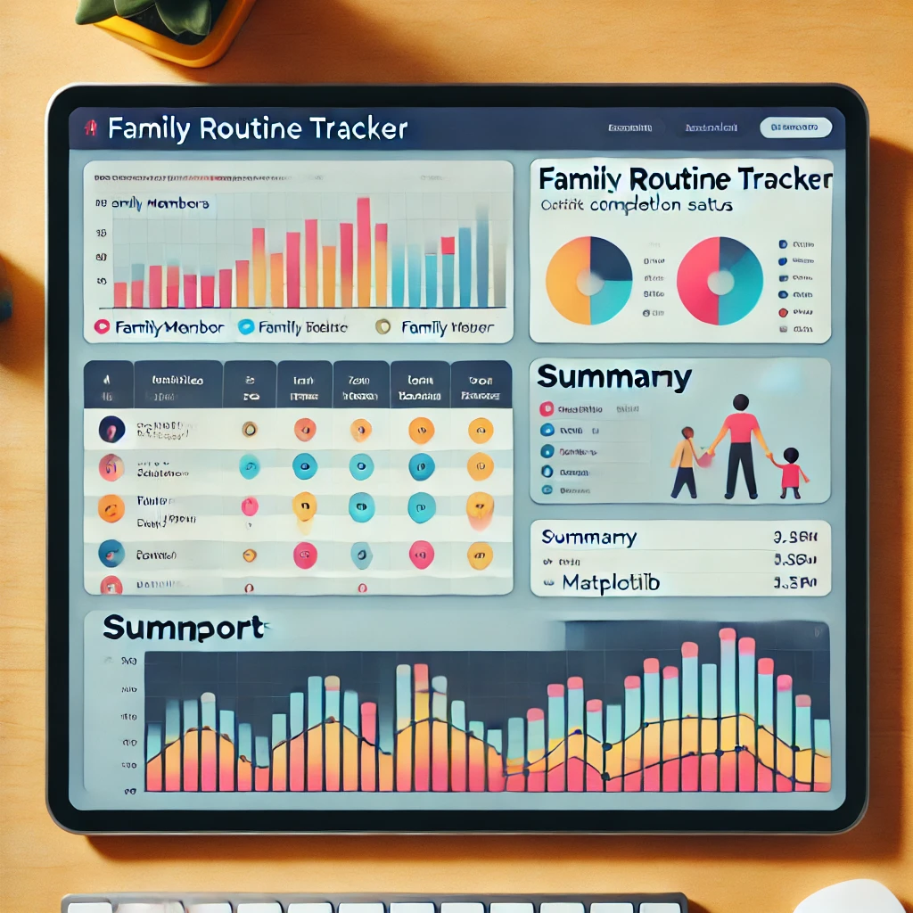
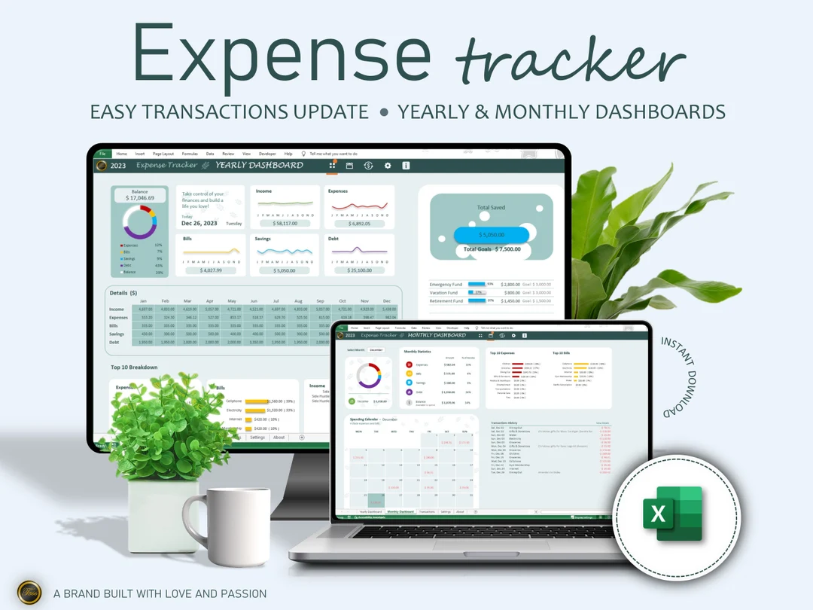
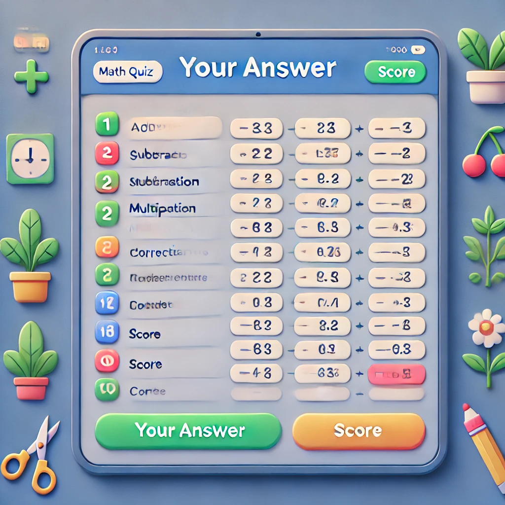

About Me
I am a passionate technologist with a robust foundation in Design and Verification of ASIC (Application Specific Integrated Circuits), now transitioning into the rapidly evolving field of software development.
My career began with a deep interest in technology, which led me to work as a QA Engineer, where I developed a solid foundation in quality assurance, testing processes, and ensuring the reliability of software and hardware systems. I then earned a master's degree in VLSI Design and joined Synopsys as an R&D Engineer. In that role, I specialized in verifying custom hardware systems such as Wireless Modems (2G/3G/LTE) and embedded MultiMedia Chips (eMMC), refining my skills in software development, quality control, and problem-solving.
After taking a career break to focus on family, I remained engaged with the fast-evolving tech industry by pursuing online courses and hands-on projects. During the pandemic, I explored data analytics and AI, gaining proficiency in Python, and earned certifications like the IBM Data Analyst Professional and IBM AI Developer Professional.
Recently, I’ve expanded my expertise with specializations in AWS fundamentals, Generative AI, and large language models (LLMs), all of which have equipped me with the tools to thrive in software development, testing, data analysis, or ML/AI engineering roles. With a proven track record of adaptability and a passion for continuous learning, I’m excited to bring my diverse skill set to new challenges in the tech space.
My Technical Expertise
-
Python Development: Mastery of Python fundamentals, object-oriented programming (OOP), and data structures.
-
Web Development: Proficiency in Flask for back-end development, with basic skills in HTML and CSS.
-
Data Analysis: Experience in analyzing, manipulating data and modelling using ML algorithms, Pandas and NumPy, along with SQL for database operations.
-
Version Control and Testing: Proficiency in Git for collaboration and creating unit tests with
unittest.
-
API Integration: Understanding of RESTful APIs to build and integrate web services.
-
Deployment: Knowledge of deploying applications on platforms like AWS.
-
AWS: Knowledge of AWS fundamentals, including cloud computing concepts and services.
-
Generative AI: Knowledge of Generative AI and LLMs, focusing on architecture and data preparation for AI-driven applications.
I am eager to join a dynamic team where I can combine my analytical mindset, problem-solving abilities, and passion for innovation. Explore my portfolio to see how my journey, skills, and projects come together to deliver impactful solutions!
Emerging Skills in Technology

In this Data Analysis project, the goal is to identify top in-demand programming skills for the current year by collecting data from job postings, training platforms, and surveys. The project started by gathering data on programming languages, database skills, and popular IDEs from online sources via web scraping and API access, storing data in formats like .csv, Excel, and databases. Data wrangling techniques prepared the dataset for analysis, followed by statistical analysis to uncover trends and insights. Finally, IBM Cognos Analytics is used to build a dashboard to convey the story behind the data.
Data Science - ML Project

This Real Estate Market Price Prediction project involves developing a data-driven model to estimate residential property prices using historical housing data from King County, Seattle. Key project stages included data cleaning, exploratory data analysis (EDA), feature selection, model building, and evaluation. By analyzing features like square footage, bedrooms, bathrooms, and location, the project identified significant predictors of housing prices and developed a predictive model using techniques such as linear regression.
Chicago Public Data Analysis Project

The Chicago Socioeconomic, Public Schools, and Crime Data Analysis project involves analyzing diverse datasets related to socioeconomic factors, public school performance, and crime statistics in Chicago. Using SQL for data extraction and manipulation, the project identifies patterns and correlations between socioeconomic indicators, school performance, and crime rates across different neighborhoods. The project showcases skills in data cleaning, aggregation, and advanced SQL querying, as well as the ability to draw meaningful conclusions from complex datasets.
Data Visualization Project

This project focuses on analyzing and visualizing wildfire activities in Australia using a dataset spanning from 2005, containing metrics such as estimated fire area, brightness, radiative power, and confidence levels across seven regions. The analysis involves creating visualizations like line charts, bar plots, pie charts, histograms, scatter plots, and interactive maps using tools such as Pandas, Matplotlib, Seaborn, and Folium to explore patterns and trends. Additionally, an interactive dashboard is built using Dash and Plotly, allowing users to select a region and year to dynamically display charts.
This project demonstrates the creation of a ChatGPT-like conversational AI application using Facebook’s Blenderbot model and Hugging Face’s Transformers library. It showcases the integration of a transformer-based large language model (LLM) for natural language understanding and response generation. The project involved building a Flask-based back-end server to process inputs, selecting an appropriate LLM based on licensing and performance criteria, and transitioning the chatbot from a terminal-based interface to a user-friendly web interface.
Private Data Summarization
This project involved developing an intelligent chatbot that uses advanced generative AI technologies to analyze and summarize PDF files. By leveraging Meta's Llama 2 language model and the Retrieval-Augmented Generation (RAG) technique, the chatbot provides contextually accurate and detailed responses based on the content of uploaded PDFs. LangChain was integrated to streamline the RAG process, enabling efficient data extraction and summarization. A Flask-based backend was implemented to manage HTTP requests and ensure smooth interaction between the chatbot and users.

An Emotion Detection app uses natural language processing (NLP) to analyze user text inputs and identify emotional tones, such as joy, sadness, anger, fear, and disgust. By leveraging IBM Watson's NLP capabilities, the app can process text to extract these emotions, providing insights into the underlying sentiment or mood of the text.

Developed a basic sentiment analyzer leveraging IBM Watson's Natural Language Understanding (NLU) API to detect the sentiment of text data, categorizing it as positive, negative, or neutral. The project involved text preprocessing, API integration, and visualizing sentiment insights using Python.
Image Captioning with Generative AI

Developed an AI-powered image captioning application using the BLIP model from Hugging Face’s Transformers and Gradio for a user-friendly interface. The tool analyzes images, generates accurate text descriptions, and creates a text index, showcasing its practical applications in content indexing, social media engagement, and efficient visual data management.
Simple e-commerce web application

This project is a simple e-commerce web application built with Flask, SQLAlchemy, and Bootstrap for a responsive and dynamic user interface. It features an intuitive product catalog, secure user authentication, an interactive shopping cart, and an admin panel for managing products and orders.

The Family Routine Tracker is a Python application developed with Tkinter, Excel, and matplotlib, designed to streamline daily routines for my family. It allows each family member to log unique activities, automatically tracks progress, and generates activity reports, making it easy to monitor and adjust routines dynamically. The app features a user-friendly interface and visually engaging reports, supporting effective family time management and organization.

The Personal Expense Tracker is a Python-based project designed to streamline expense management by extracting bank statement data directly from PDF files, using PyPDF2 and regex for data extraction. Leveraging pandas for analysis, it categorizes transactions and provides insights into monthly spending patterns. The project generates visualizations for clear monthly usage summaries and consolidates the analyzed data into an organized Excel file, enhancing personal finance tracking and budgeting.

The Math Mastery Quiz App is an interactive Python-based application built with Tkinter. It presents users with a variety of math problems (matching my daughter's grade level), including four-digit addition and subtraction, three-digit multiplication, and fraction operations (addition, subtraction, multiplication). The app generates random questions, displays them in a table, and allows users to select and answer each problem in a guided format. The app provides immediate feedback on accuracy, a running score, and a final message upon quiz completion, making it an engaging tool for learning and practicing math skills.
A Simple Tool Rental Project

The Tool Rental System is a Python application designed to manage tool rentals efficiently. Users can browse available tools, view details, and rent tools for specific time frames. The system keeps track of rental durations, calculates costs based on usage, and provides a streamlined interface for tracking rentals and returns. This project was done to demonstrate the effectiveness of OOPS in programming.